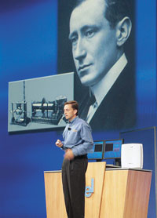
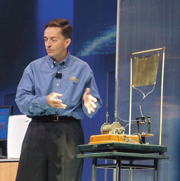

Александр Семенов
В наши дни любое беспроводное устройство соединяется со своей сетью в одном-единственном стандарте. Инженеры радиосвязи в каждом конкретном случае используют определенный тип частотной модуляции и создают специальные контуры для его реализации. В процессе сеанса связи радиоприемник выбирает только один тип сигнала и отбрасывает все остальные.
В результате мобильным пользователям порой приходится носить с собой целый "букет" устройств - сотовый телефон, пейджер, ноутбук, КПК, устройство для доступа в Интернет и т. п. Одна из причин такого неудобства - в том, что регулирующие органы чаще всего выдают оператору лицензию на организацию связи в строго определенном диапазоне частот. Те немногие устройства, которые могут работать в нескольких диапазонах частот, оказываются громоздкими и потребляют много энергии, поскольку конструкторы часто дублируют функции, впихивая несколько систем и приложений в одно устройство.
Для решения непростой и крайне актуальной задачи "всеобщей совместимости" корпорация Intel (http://www.intel.com) приступила к созданию интеллектуальной платформы, способной осуществлять поиск радиосигнала любого стандарта и выходить на связь с источником в любом месте и в любое время. Платформа будет реализована фактически в одном полупроводниковом элементе, интегрированном в каждой микросхеме Intel, что даст возможность миллионам устройств "разговаривать" друг с другом и "понимать" друг друга. Это будет реальная конвергенция вычислительных и коммуникационных технологий.
Микросхема со встроенным радиоэлементом одновременно станет и существенным шагом на пути к всеобщей миниатюризации. Сегодня радиоустройства занимают немало места и потребляют немало энергии, в то время как микроэлементы, встроенные в чипы, смогут превратить наручные часы, к примеру, в терминалы для сеансов видеосвязи, а женские клипсы или брелоки для ключей - в полноценные мультидиапазонные сотовые телефоны.
Бесплатное радио Intel
В феврале 2002 г. на ежегодном Форуме разработчиков корпорации Intel (IDF) старший вице-президент и директор Intel по технологиям Пэт Гелсингер впервые озвучил идею о том, что надо добавить возможность беспроводной связи любому устройству путем интеграции радиоконтуров в каждую его часть. Radio Free Intel предусматривает наличие радиопередатчиков, работающих в нескольких стандартах и на нескольких частотах, но на единой платформе, встроенной в недорогие кремниевые микросхемы. Такая платформа позволяет организовать гибкие действия радиопередатчика на основе встроенной в него программы, и не за горами тот день, когда она станет основополагающей технологией беспроводных коммуникаций будущего.
"Суть идеи Radio Free Intel заключается в том, что все беспроводные протоколы реализуются с помощью одного набора компонентов, встроенных в компьютерную микросхему, - говорит Стив Павловски, директор группы технологий коммуникаций и взаимосвязи (Communications and Interconnect Technologies) Intel. - Чтобы достичь этого, аналоговые радиочастотные и логические части радиоустройств должны быть перестраиваемыми для адаптации к разным сетям и протоколам".
Естественно, Intel разрабатывает новую технологию не в одиночестве: есть свои наработки у лидеров телекоммуникационного рынка - компаний Texas Instruments (http://www.ti.com) и Motorola (http://www.motorola.com), уже несколько лет работают в этом направлении Sandbridge Technologies (http://www.sandbridgetech.com), General Dynamics (http://www.GeneralDynamics.com) и Analog Devices (http://www.analogdevices.com). Другой вопрос, что участие такого гиганта индустрии, как корпорация Intel, в решении столь насущной проблемы наверняка придаст процессу мощный импульс. "Хорошо, когда в работу включается крупный производитель, - говорит Руперт Бейнс, вице-президент PicoChip, британской компании по производству коммуникационного оборудования. - Это лишний раз подтверждает то, что мы занимаемся действительно перспективными вещами".
|  | Все началось с Маркони.
|
Ищут пожарные, ищет полиция...
Рассказывают, что в 1983 г. во время высадки американских войск на Гренаде одному армейскому генералу пришлось срочно искать мелочь для таксофона, чтобы наладить связь с другим подразделением, - оказалось, что армейские радиостанции разных родов войск не могли связаться друг с другом. Чтобы избежать подобных казусов в будущем, военные решили разработать радиотехнологию, способную обеспечивать связь в мультичастотном режиме. Вскоре к разработке программируемого радио присоединились операторы сетей мобильной связи, полиция и пожарные.
Упомянутая уже компания PicoChip (http://www.picochip.com) недавно предложила программно-интеллектуальную платформу для базовых станций сотовых сетей. Сегодня базовая станция предназначена для работы в одном-единственном стандарте, и процесс смены стандарта или его обновления долог, дорог и сложен. С программно-интеллектуальным радио, наоборот, все легко и просто: не надо менять никакого оборудования, необходимые операции можно провести в операционном центре. По мнению экспертов, использование подобных технологий может сэкономить сотовым операторам десятки миллионов долларов в момент выхода на новые рынки.
Военно-морские силы США уже используют цифровое интеллектуальное радио, разработанное компанией General Dynamics, - устройство размером с переносной телевизор и массой не более сотни килограммов заменяет радиорубку подводной лодки, забитую шкафами с радиооборудованием. Правда, стоит этот аппарат около 400 тыс. долл. Пока стоимость устройств на базе программно-интеллектуальных радиоэлементов остается более высокой, чем цена "гибридных" устройств.
"Бесплатное радио" Intel базируется на "трех китах" - новых устройствах, новом программном обеспечении и свободном нелицензируемом радиоспектре. Познакомимся с каждым из них подробнее.
Кит первый - новые устройства
Чтобы интегрировать возможности беспроводной связи в каждое полупроводниковое устройство, корпорация Intel предлагает использовать преимущества производства стандартных КМОП-полупроводников (complimentary metal-oxide semiconductor). Большие объемы и низкие издержки этого производства сделают "бесплатное радио Intel" простым и удобным для пользователей. Подход Intel к архитектуре программно-интеллектуального радио основан на использовании набора специальных элементов с определенными вычислительными функциями. Программируя различные связи между ними, можно реализовать все необходимые протоколы радиосвязи. При этом технология MEMS позволяет существенно уменьшить размер и стоимость пассивных компонентов (катушки индуктивности, конденсаторы и т. д.), необходимых в электрической цепи радио.
Еще одна область, где ведутся исследования и разработки, - использование так называемых умных антенн, позволяющих с помощью специальных каскадов усиливать радиосигнал и концентрировать его в ограниченном телесном угле, что не только улучшает качество приема, но и снижает помехи со стороны других передатчиков. Применение технологии "умных антенн" приводит к более эффективному использованию частотного спектра, увеличению пропускной способности сети и ее емкости при одновременном уменьшении интерференции в переполненном частотном спектре.
Сочетание всех этих технологий позволит реализовать идею "гибкого радио" - устройства, способного выбирать в зависимости от ситуации тот радиопротокол и ту частоту, которые ему удобнее использовать в данный момент. Такое решение значительно приблизит тот день, когда универсальный интеллектуальный роуминг из области фантастики переместится в нашу жизнь.
С каждым днем идеи бесплатного радио Intel приближаются к своему реальному воплощению. Исследователи из лаборатории цепей (Circuit Research Lab, CRL) Intel в Хиллсборо (шт. Орегон, США) в сотрудничестве с лабораторией технологий коммуникаций и взаимосвязи уже разработали и изготавливают ключевые блоки для цифрового процессора перестраиваемого радио.
Вместо того, чтобы дублировать контуры оборудования для работы на нескольких частотах и в нескольких стандартах, созданы перепрограммируемые цепи, которые при помощи ПО могут реализовать различные варианты беспроводных коммуникаций в разных ситуациях.
Рэм Кришнамурти, менеджер исследовательской группы высокопроизводительных цепей в CRL, так рассказывает о первых опытных образцах: "Наши исследования фокусируются на ключевых строительных блоках, таких, как фильтры-умножители и декодеры Viterbi для нашего устройства, способного работать по шести протоколам (в будущем их станет еще больше) при помощи одной микросхемы с очень небольшим энергопотреблением".
Как объясняет г-н Кришнамурти, такие микросхемы представляют собой новый класс архитектур, называемых гетерогенными перестраиваемыми мультипроцессорами. Они имеют высокую вычислительную эффективность в сочетании с низким энергопотреблением.
|  | Таким был первый передатчик.
|
Перестраиваемое радио
По мнению Стива Павловски, к перестраиваемой логике для несущей частоты предъявляются два основных требования. Она должна быть в состоянии перестраиваться не хуже, чем процессор для обработки цифровых сигналов, а энергопотребление ее должно быть сравнимо с процессорами на базе ASIC-конфигураций.
Группа корпоративных технологий (MRL/CITL) разрабатывает вычислительную архитектуру и логику для выполнения этих требований. Архитектура для процессорной подсистемы будет содержать комбинацию вычисляющих элементов, организованных в сеть, оптимизированную для адекватного функционирования и масштабируемости.
16-разрядная микросхема усилителя, разработанная исследователями Intel, совершает миллиард операций в секунду (GOPS - gigaoperations per second) и потребляет 22 мВт мощности. Она сделана по технологии 90-нм CMOS-полупроводников и занимает площадь 0,03 мм2. Это одна из наиболее высоких плотностей GOPS/W, достигнутых за всю историю развития микропроцессоров.
Проект Paragon
Часть проекта, в котором достигнуто рекордное отношение вычислительной мощности к потребляемой, носит название Paragon. Рекорд был достигнут благодаря использованию уникальной архитектуры, в которую входят программируемый процессор, набор гетерогенных перестраиваемых вычислительных элементов под названием kernel (все они отличаются друг от друга, поэтому архитектура и называется гетерогенной) и перестраиваемые взаимосвязи между элементами. Эта конструкция позволяет реализовать гораздо большую гибкость, чем решение со специальными интегральными цепями (ASIC - application specific integrated circuit). По мнению Рэма Кришнамурти, использование таких процессоров существенно приближает возможность организации беспроводного доступа в любое время, в любом месте и через любой протокол - то самое бесплатное радио Intel.
Кит второй - программное обеспечение
Много лет эксперты по обеспечению безопасности людей в городах говорили о том, как плохо, что полиция, пожарные, машины экстренной медицинской помощи не могут общаться друг с другом по радио, поскольку их устройства работают на разных частотах. Все эти разговоры оставались "гласом вопиющих в пустыне", пока трагедия 11 сентября в Нью-Йорке не показала, что многие пожарники и полицейские погибли из-за того, что не могли общаться друг с другом по радио. Несовместимость радиосвязи привела к гибели людей.
После 11 сентября в США активно заработал специальный комитет по совместимости (NTFI - National Task Force on Interoperability), который выпустил подробный документ с анализом того, почему отсутствует единая радиосвязь между различными государственными структурами в периоды острой необходимости.
"Коммуникационная индустрия стала активно искать пути создания радио, работающего в нескольких частотных диапазонах, понимающего различные протоколы передачи, перестраивающегося в процессе работы и способного к простой модернизации - и все это в одном-единственном устройстве", - говорит Рави Мурти, инженер сетевого программирования в группе корпоративных технологий корпорации Intel.
Концепция бесплатного радио Intel ориентирована на создание именно такого устройства, причем не только для американского пользователя, а для всего населения Земли.
Не все так просто...
Несмотря на колоссальный прогресс в CMOS-полупроводниках и других технологиях, встроить радио в микросхемы оказывается совсем не просто.
Дело в том, что радио - это аналоговая структура. Значения используемых в нем частот и напряжений не являются дискретными (т. е. набором нулей и единиц), а изменяются непрерывно в каком-то диапазоне. Разработчики корпорации Intel столкнулись с нетривиальной проблемой: как превратить аналоговые величины в цифровые. К счастью, у них уже был определенный опыт работы над сходными задачами.
Например, создавая технологию "беспроводного Интернета на микросхеме", инженеры Intel преодолели существенные сложности, связанные с совершенно различными путями оптимизации процессов производства коммуникационных и вычислительных устройств. Вместо того, чтобы идти независимыми путями, создавая отдельные микросхемы для коммуникаций, вычислений и памяти, разработчики Intel использовали последние достижения в создании флэш-памяти и встроили цифровые и аналоговые возможности в единый процесс. Правда, для этого пришлось объединить усилия и знания целого ряда экспертов и самых разных подразделений.
Программно определяемое радио
Естественно, создание "радио на каждой микросхеме" требует объединения усилий самых разных разработчиков, причем здесь можно выделить два основных направления - оборудование и программное обеспечение.
Об успехах разработчиков микропроцессоров мы уже рассказали; теперь познакомимся с достижениями разработчиков ARA (Adaptive Radio Architecture - адаптивной архитектуры радио) - набора программ, который поддерживает целый ряд систем коммуникаций, как проводных, так и беспроводных. "ARA даст возможность быстрого развития и совместимости различных перестраиваемых устройств на единой платформе", - считает Джо Питарецци, менеджер по развитию бизнеса в лаборатории сетевой архитектуры Intel (NAL).
По мнению разработчиков Intel, эта программная платформа будет развиваться и поддерживать как гибкое (способное выбирать сигнал из широкого диапазона частот), так и подстраиваемое радио (гибкое радио, которое можно программно заставить выбирать нужный сигнал). Эту платформу с включением широкого круга возможностей называют программно определяемым радио (Software-Defined Radio, SDR).
Гибкая программная архитектура SDR обеспечивает пользователю возможность работы по различным протоколам, способна быстро перестраиваться и модернизироваться. Ноутбуки, сотовые телефоны и КПК, снабженные таким ПО, могут динамически программироваться для перестраивания. Другими словами, одни и те же детали оборудования в таких устройствах могут выполнять разные функции в разных обстоятельствах.
Кроме того, то, что всегда делалось на уровне оборудования, теперь может выполняться на уровне программ. В список таких функций входят генерация сигнала, модуляция волн, обработка сигнала и использование многоуровневых протоколов.
Итак, микросхемы и программы для бесплатного радио Intel не за горами, но для эффективной его работы еще совершенно необходима среда, в которой он будет действовать. Это только кажется, что радиоволны распространяются по воздуху беспрепятственно: на самом деле они делают это в строгом соответствии с указаниями регулирующих органов...
Кит третий - свободный нелицензируемый радиоспектр
Если и можно где-то отыскать настоящую свободу, то только далеко на севере. Здесь, в арктическом Квебеке (Канада), немногочисленные обитатели суровой тундры охотятся, ловят рыбу и используют радиоспектр так же, как землю и воду, - без ограничений. Кевин Кан, содиректор лаборатории коммуникаций и взаимосвязи корпорации Intel, считает, что именно такое использование радиочастот можно считать единственно правильным в наши дни. "Спектр - это общий ресурс, которым все должны пользоваться по своему желанию", - говорит он. К сожалению, в большинстве мест на планете дело обстоит совсем не так: использование спектра строго регламентировано. По мнению многих экспертов, слишком строго.
Закон Мура добрался и до передатчика Маркони
"Нормы регулирования радиоспектра сегодня ориентированы на состояние технологий столетней давности", - считает Кевин Кан. В течение многих лет нормирующие органы по всему миру нарезают радиоспектр на небольшие кусочки и распределяют их между компаниями или же выставляют на аукционы для свободной конкуренции. Радиоспектр - это ведь не только радиосвязь в буквальном смысле этого слова. Это и телевидение, высокочастотная связь и вещание, радары, коротковолновая связь, спутниковая связь, устройства, открывающие двери в гараже, и устройства для контроля за спящими детьми, сотовые телефоны и все более популярный беспроводной доступ Wi-Fi - в общем, это все те килогерцы, мегагерцы и гигагерцы, которых мы порой не слышим, но активно используем в повседневной жизни.
"Сегодня мы присутствуем при зарождении тех радиотехнологий, которые будут использоваться всеми в ближайшие лет 70, - считает Кевин Кан. - Радио всегда было аналоговым, но в самое ближайшее время оно станет цифровой технологией. Образно говоря, закон Мура добрался до передатчика Маркони".
Проблемы регулирования радиоспектра
Поскольку с самого начала было ясно, что на пути распространения бесплатного радио Intel встанут не только технологические, но и административные сложности, эксперты Intel работают в тесном контакте с регулирующими органами по всему миру, чтобы создать условия для плодотворного развития новых технологий.
"Стремительное развитие микропроцессоров вскоре приведет к созданию гораздо более гибких умных радиоустройств, чем те, что используются сегодня, - считает Кевин Кан. - Одним из основных препятствий на пути этих революционных изменений сегодня стали искусственные помехи и преграды, создаваемые правилами управления радиоспектром". В качестве примера торжества свободного использования радиоспектра Кан приводит стремительный расцвет стандарта IEEE 802.11 (Wi-Fi).
Сторонники лицензирования (иначе говоря, скрытые противники будущей беспроводной свободы) аргументируют свою позицию желанием избежать интерференции между различными сигналами, действующими без лицензии в одном диапазоне. Но, по мнению г-на Кана, сегодня такое выделение частот стало архаичным, а сам радиоспектр используется крайне неэффективно. В любое время на самом насыщенном рынке есть множество свободных частот.
"Цифровое радио открывает совершенно новые пути для рассмотрения радиочастотного спектра, - считает Кевин Кан. - Прежде всего оно сможет работать в гораздо более широком диапазоне частот, чем прежние устройства. Кроме того, цифровое радио потребляет гораздо меньше энергии. Оно умное, в том смысле, что может самостоятельно определять наличие сетей вокруг себя и переходить в оптимальный диапазон. Например, оно может покинуть ту или иную частоту при возникновении угрозы интерференции сигнала. Все это должны учитывать и регулирующие органы при распределении радиоспектра".
"Не надо забывать и о том, - подчеркивает г-н Кан, - что у нас появляется множество возможностей, среди которых предстоит выбрать оптимальные, и множество новых проблем. Надо тщательно думать и делать правильный выбор".
Заключение
Реализация концепции Radio Free Intel влечет за собой не только потребность в серьезных технологических изысканиях, но и необходимость в серьезной работе на законодательном уровне. Корпорация Intel сегодня активно взаимодействует с экспертами правительственных организаций в США, странах Европы, Азиатско-Тихоокеанского региона для того, чтобы выработать единый подход к регулированию интеллектуального роуминга. Параллельно с разработкой технологических решений Intel участвует и в разработке новых отраслевых стандартов, которые в будущем обеспечат эффективное внедрение программно-интеллектуального радио, поскольку одна из проблем внедрения - повсеместное заключение соглашений между различными операторами связи и Интернет-провайдерами.
Директор корпорации Intel по технологиям Патрик Гелсингер уверен: "Недалек тот день, когда мы сможем создавать радиоустройства, способные работать в нескольких режимах и в разных сетях одновременно (например, интеллектуальные сотовые телефоны с интегрированной памятью, возможностями обработки приложений и немодулированной передачи данных), и все это будет сосредоточено на одном полупроводниковом кристалле. Вы сможете поместить этот кристалл в наручные часы, в миниатюрный наушник-клипсу, в микрофон, закрепленный на лацкане пиджака, - куда угодно! Хорошая новость: все эти "чудеса" станут доступны разработчикам приложений и потребителям уже в конце текущего десятилетия, а то и раньше. Используя новые подходы в КМОП-технологии и в технологии миниатюрных электромеханических систем (micro-electrical mechanical systems, MEMS), мы уже сегодня можем интегрировать все основные схемы и компоненты, необходимые для создания КМОП-кристаллов радиомикросхем, непосредственно на стандартной кремниевой КМОП-пластине. Наши исследования в этой области идут с большим опережением графика. Мы уверенно продвигаемся к нашей цели - реализации концепции Radio Free Intel в течение ближайших трех-пяти лет".
Ренессанс радиоИз выступления Патрика Гелсингера на IDF Fall в Сан-Хосе 18 сентября 2003 г. "Всего через десять лет большинство жителей Земли будет общаться друг с другом беспроводным образом, - сказал Пэт Гелсингер, выступая с заключительным пленарным докладом на Форуме Intel для разработчиков. - Корпорация Intel ускоряет конвергенцию вычислительных и коммуникационных технологий путем создания недорогих и эффективных решений в радиотехнологии. В результате беспроводные коммуникации становятся удобными и незаметными для пользователя. При этом огромное значение приобретает создание мощной, гибкой, стандартизованной беспроводной инфраструктуры". Гелсингер назвал этот процесс периодом Ренессанса для радио, поскольку радио становится неотъемлемой частью любого устройства. Ключевое понятие в этом процессе - адаптивность, или изменение поведения в ответ на изменившееся поведение окружающей среды. Гелсингер выделил три сферы адаптивности в работе мобильных устройств. Первая - адаптивность к физическим условиям. Прежде, когда связь была проводной, условия соединения по установленному каналу практически не менялись с течением времени. При организации беспроводной связи на многокилометровых расстояниях приходится считаться с тем, что физические условия между приемником и передатчиком постоянно меняются, и это делает связь нестабильной. При помощи "системы умных антенн" и режима работы MIMO (Multiple Input Multiple Output) качество связи повышается многократно, а энергопотребление снижается в миллион раз! Суть метода в том, что сигнал передается не с одного передатчика на один приемник, а делится между четырьмя передатчиками и четырьмя приемниками. Такое дробление позволяет избежать потери качества связи и усиливать передающийся сигнал, причем в определенном направлении.
Вторая сфера - адаптивность к сети. Пэт Гелсингер обратил внимание слушателей на то, что любой из них не раз попадал в ситуацию, когда необходимо перезагрузить сеть, поскольку, если много пользователей обращаются к одной точке доступа, скорость передачи данных у каждого из них в отдельности резко снижается. Intel предлагает иной способ организации связи - посылать информацию не сразу к требуемой точке доступа, а от "соседа к соседу", резко повышая пропускную способность беспроводной сети. Кроме того, при организации беспроводной сети надо стремиться увеличить число беспроводных точек доступа в ней и максимально уменьшить число точек с проводным доступом, поскольку беспроводные точки проще устанавливать и они дешевле. "Нам больше не нужны медные провода", - провозгласил Гелсингер. Третье направление - адаптивность к пользователям. Пэт Гелсингер еще раз продемонстрировал образец нового класса мобильных устройств - "универсальный коммуникатор", показав, как при перемещении устройства по залу связь в режиме интеллектуального роуминга переключается из стандарта 802.11 в сотовую сеть GSM, а затем переходит на технологию GPRS. При этом на экране коммуникатора сохранялось изображение из холла здания, где проходил форум, а сам Гелсингер не прерывал разговора со своим ассистентом. Однако для реализации "Ренессанса радио" приходится разрабатывать компоненты, которые должны прийти на замену аналоговым элементам радиопередатчиков и приемников. Как рассказал Пэт Гелсингер, в Intel успешно изготовлены ключевые компоненты радио на основе цифровых CMOS-транзисторов по технологии 0,18 мкм. Создание элементов радио из кремния делает их гораздо дешевле и в будущем позволит встраивать радиокомпоненты в любые продукты без заметного увеличения их цены. |